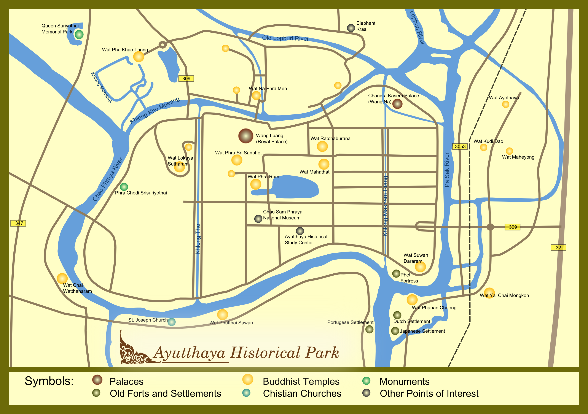

ทำเลที่ตั้ง
เมืองตั้งอยู่บริเวณที่มีแม่น้ำ เจ้าพระยา ป่าสัก และลพบุรี ล้อมรอบ ทำให้มีลักษณะคล้ายเกาะ และช่วยในการป้องกันเมือง
เรื่องราวของราชธานีอันยิ่งใหญ่ ศูนย์กลางแห่งการเมือง การค้า ศาสนา และวัฒนธรรม ที่รุ่งเรืองมายาวนานกว่า 4 ศตวรรษ
จากราชธานีโบราณ สู่มรดกโลกในปัจจุบัน
กรุงศรีอยุธยาเป็นราชธานีแห่งที่สอง ของประเทศไทย ก่อตั้งขึ้นเมื่อ พ.ศ. 1893 โดยสมเด็จพระรามาธิบดีที่ 1 หรือพระเจ้าอู่ทอง
อยุธยาดำรงฐานะราชธานี เป็นเวลาประมาณ 417 ปี ก่อนเสียกรุงครั้งที่ 2 ใน พ.ศ. 2310
ตลอดระยะเวลาที่เป็นราชธานี อยุธยาได้พัฒนาจนกลายเป็น ศูนย์กลางสำคัญของภูมิภาค ทั้งด้านการเมือง เศรษฐกิจ ศาสนา และวัฒนธรรม

สมเด็จพระรามาธิบดีที่ 1 หรือพระเจ้าอู่ทอง สถาปนากรุงศรีอยุธยา ให้เป็นราชธานี
อยุธยามีความสัมพันธ์ทางการค้า กับจีน ญี่ปุ่น เปอร์เซีย และชาติตะวันตกหลายประเทศ
กรุงศรีอยุธยาสิ้นสุดสถานะ การเป็นราชธานี หลังจากดำรงความรุ่งเรือง มาอย่างยาวนาน
อุทยานประวัติศาสตร์ พระนครศรีอยุธยาได้รับการขึ้นทะเบียน เป็นมรดกโลก
เมืองตั้งอยู่บริเวณที่มีแม่น้ำ เจ้าพระยา ป่าสัก และลพบุรี ล้อมรอบ ทำให้มีลักษณะคล้ายเกาะ และช่วยในการป้องกันเมือง
อยุธยาเป็นเมืองท่าสำคัญ มีพ่อค้าและนักเดินทาง จากหลายประเทศเข้ามาติดต่อ และตั้งถิ่นฐาน
การติดต่อกับต่างชาติทำให้เกิด การแลกเปลี่ยนภาษา ศิลปะ อาหาร ความรู้ และเทคโนโลยี
ทำเลที่ตั้งของอยุธยาเป็นหนึ่งใน ปัจจัยสำคัญที่ทำให้เมืองสามารถ เจริญรุ่งเรืองได้
แม่น้ำที่ล้อมรอบเมืองไม่ได้เป็นเพียง แนวป้องกันตามธรรมชาติเท่านั้น แต่ยังเป็นเส้นทางคมนาคม และเส้นทางการค้าสำคัญ


อยุธยามีการติดต่อกับชาวต่างชาติ หลายประเทศ เช่น จีน ญี่ปุ่น โปรตุเกส ฮอลันดา ฝรั่งเศส และเปอร์เซีย
การติดต่อเหล่านี้ทำให้เกิด การแลกเปลี่ยนทางวัฒนธรรม และทำให้อยุธยากลายเป็นเมือง ที่มีความหลากหลาย
ปัจจุบันอุทยานประวัติศาสตร์ พระนครศรีอยุธยาเป็นแหล่งเรียนรู้ ทางประวัติศาสตร์ที่สำคัญ และได้รับการขึ้นทะเบียน เป็นมรดกโลกใน พ.ศ. 2534